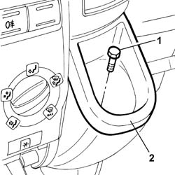
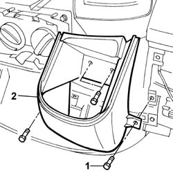

7040A77 GLASS HOLDER ON FACIA TRIM - R R
- Path
- Procedures > 70 FITTINGS > 7040 BODY INTERIOR FITTINGS AND TRIM > 7040A PASSENGER COMPARTMENT TRIM > 7040A77 GLASS HOLDER ON FACIA TRIM - R R
- Kind
- repair procedure (removal / refitting; the operation number is the code)
- Applies to
- all engines; all production periods
- Interactive page
- https://sloeber94.github.io/elrnDB-fDct/en/#/244001508
Applies to: all engines; all production periods
 Removing
Removing
 Refitting
Refitting- Disconnect the negative battery terminal.
1. Undo the fixing bolt.
2. Remove the glass holder.

Applies to: all engines; all production periods
Op. 7040A18 GLOVE COMPARTMENT ON FACIA - ARRANGE
Op. 7040A19 CUSHION PADDING - R R
Op. 7040A78 RADIO COMPARTMENT BOX R R
Op. 7040A72 UPPER CENTRAL DOCUMENT HOLDER ON DASHBOARD - R.R .
Op. 7065C10 AIR CONDITIONING CONTROL PANEL - R+R
Op. 7065C53 ASHTRAY COMPARTMENT FLAP-R R
1. Undo the fixing bolts.
2. Remove the trim from the glass holder.

Applies to: all engines; all production periods
Refitting
Removing- Place the trim on the glass holder and tighten the fixing bolts.
Op. 7065C53 ASHTRAY COMPARTMENT FLAP-R R
Op. 7065C10 AIR CONDITIONING CONTROL PANEL - R+R
Op. 7040A72 UPPER CENTRAL DOCUMENT HOLDER ON DASHBOARD - R.R .
Op. 7040A78 RADIO COMPARTMENT BOX R R
Op. 7040A19 CUSHION PADDING - R R
Op. 7040A18 GLOVE COMPARTMENT ON FACIA - ARRANGE
- Position the glass holder and tighten the fixing bolt.
- Connect the negative battery terminal.